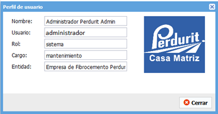

Ayuda en línea
Future Framework
Portal de gestión
Versión 1.0.0
Introducción
En el presente documento se explicarán las funcionalidades y estructura del Portal de gestión del Sistema de Cuadro de Mando Integral Perdurit con el fin de obtener una guía que le sirva al usuario como material de apoyo para el uso diario del sistema.
El Portal de gestión es el encargado de manejar toda la información del Sistema de Cuadro de Mando Integral Perdurit. Su estructura está compuesta por el menú de navegación de los módulos, barra de vínculos y el menú del usuario.
Autenticación de usuarios
Ruta de acceso: http://rutaalsistema
Descripción de la funcionalidad
La funcionalidad “Autenticación de usuarios” es la encargada de validar las credenciales de cada usuario que intente acceder al sistema. Se verifican los siguientes datos: usuario, contraseña, dirección IP, y si el usuario está activo o no.
Ventana de autenticación.
1. Usuario, se debe escribir el usuario por el cual se desea realizar el acceso al sistema.
2. Contraseña, se debe escribir la contraseña correspondiente al usuario introducido en el campo número (1).
Cuando se hayan rellenado los campos se debe presionar el botón Acceder para que los datos sean procesados y se realice la verificación de las credenciales. En caso correcto se mostrará una ventana para seleccionar la entidad por la cual se desea acceder al sistema.
Selección de la entidad
Ruta de acceso: después de la autenticación
Descripción de la funcionalidad
La funcionalidad “Selección de entidad” es la encargada de listar las entidades configuradas para el acceso del usuario. Cuando el usuario acceda a una de ellas solo se mostrará la información del marco de trabajo Future Perdurit correspondiente a dicha entidad, respondiendo a la característica de multientidad y compartimentación de los datos del sistema.
Ventana de selección de entidades.
1. Listado de entidades, se debe seleccionar la entidad por la cual se realizará el acceso al sistema.
Cuando se haya seleccionado la entidad se debe presionar el botón Aceptar para acceder al sistema o el botón Atrás para regresar a la ventana de autenticación.
Portal de gestión
Ruta de acceso: después de la selección de la entidad
Descripción de la funcionalidad
La funcionalidad “Portal de gestión” es la encargada de manejar toda la información del Sistema de Cuadro de Mando Integral Perdurit. Su estructura está compuesta por el menú de navegación de los módulos, barra de vínculos y el menú del usuario.
Portal de gestión.
1. Vínculo al inicio, muestra al usuario la pantalla de inicio del Sistema de Cuadro de Mando Integral Perdurit en el área número (7).
2. Dashboard, muestra los dashboard configurados para el usuario en el módulo de seguridad.
3. Contacto, muestra los datos de contacto de las entidades que integran la empresa.
4. Acerca de, muestra información acerca del marco de trabajo Future Perdurit.
5. Menú de usuario, muestra algunos datos relacionados con el usuario, así como las opciones de cambiar contraseña y salir del sistema.
6. Menú de navegación, se listan los módulos a los cuales tiene acceso el usuario y permite realizar la navegación por cada uno de ellos.
7. Área de trabajo, es el área donde se muestran todas las funcionalidades ejecutadas en el sistema.
Dashboard
Datos del dashboard.
Es el encargado de mostrar las gráficas interactivas con los indicadores de la empresa. Solo serán visibles al usuario las gráficas que se le hayan configurado en el módulo de seguridad.
Contacto
Datos de contacto.
Es el encargado de mostrar los datos de contacto de las entidades que integran la empresa.
Acerca de
Datos acerca del sistema.
Es el encargado de mostrar la información acerca del marco de trabajo Future Perdurit.
Menú de navegación y área de trabajo
Asignar funcionalidades.
1. Panel de menú, lista todos los módulos y funcionalidades a los que tiene acceso el usuario.
2. Área de trabajo, es la encargada de visualizar el contenido de las funcionalidades de la barra de menú.
Cuando se hace clic sobre una funcionalidad del panel de menú, esta se carga en el área de trabajo para su utilización.
Menú de usuario
Descripción de la funcionalidad
La funcionalidad “Menú de usuario” es la encargada de mostrar los datos del perfil de usuario, así como las opciones de cambiar contraseña y salir del sistema.
Menú de usuario.
1. Mi perfil, muestra una ventana con los datos del perfil de usuario en caso de que se encuentre asociado a los datos de algún trabajador.
2. Cambiar contraseña, muestra una ventana para cambiar la contraseña del usuario. Requiere verificación de la contraseña actual.
3. Salir, realiza el cierre seguro de la sesión del usuario autenticado en el sistema.
Mi perfil

Perfil de usuario.
Muestra un grupo de datos relacionados con el usuario, entre ellos: nombre, usuario, rol, cargo, entidad por la que se autenticó y la foto. Si presiona el botón Cerrar se cierra la ventana.
Cambiar contraseña
Cambiar contraseña.
1. Contraseña actual, se debe escribir la contraseña actual del usuario.
2. Nueva contraseña, se debe escribir la nueva contraseña, debe tener como mínimo 8 caracteres.
3. Confirmar contraseña, se debe escribir nuevamente la contraseña.
Cuando se hayan rellenado los campos se debe presionar el botón Aceptar para guardar los cambios o el botón Cancelar para cerrar la ventana sin guardar los cambios.
Salir
Salir del sistema.
Si presiona el botón Aceptar el sistema cerrará la sesión del usuario y mostrará la ventana de autenticación, en caso de presionar el botón Cancelar, se cerrará la ventana y no se realizará ninguna acción.